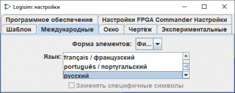

Вкладка «Локализация»

Эта вкладка позволяет настроить Logisim-evolution в соответствии с региональными предпочтениями и стандартами.
-
Форма элементов: программа поддерживает два основных стандарта отрисовки логических элементов: фигурные (ANSI) и прямоугольные (IEC / ГОСТ). Ниже показаны их различия.
ANSI (Фигурные) IEC / ГОСТ (Прямоугольные) И (AND) 
ИЛИ (OR) Фигурный стиль (ANSI) традиционно используется в США и некоторых других странах, тогда как прямоугольный стиль (IEC/ГОСТ) принят в Европе и на территории СНГ.
Logisim-evolution не следует стандартам абсолютно строго, а придерживается компромиссного варианта, обеспечивающего удобство переключения между ними. В частности, фигурные элементы нарисованы несколько более квадратными по сравнению со стандартными размерами IEEE. Кроме того, хотя в стиле ANSI элементы «Исключающее ИЛИ» (XOR) и «Исключающее ИЛИ-НЕ» (XNOR) должны иметь ту же ширину, что и «ИЛИ» / «ИЛИ-НЕ», они отрисовываются с другой шириной из-за сложностей масштабирования прямоугольного элемента XOR в стандарте IEC.
-
Язык: позволяет изменить язык интерфейса приложения. В настоящее время доступны переводы на английский, немецкий, французский, испанский, португальский, польский, русский, греческий, итальянский, голландский и японский языки.
- Французский перевод частично появился в версии 2.13.22 (автор — Roberto Rigamonti) и был полностью завершён в версии 2.14.2 (Marc-André Baillifard, Лозаннский университет).
- Немецкий перевод добавлен в версии 2.6.1 (Uwe Zimmermann, Уппсальский университет, Швеция).
- Греческий перевод добавлен в версии 2.7.0 (Thanos Kakarountas, Технологический образовательный институт Ионических островов, Греция).
- Итальянский перевод добавлен в версии 2.14.7.
- Голландский перевод добавлен в версии 3.2.0.
- Португальский перевод добавлен в версии 2.6.2 (Theldo Cruz Franqueira, Папский католический университет штата Минас-Жерайс, Бразилия).
- Русский перевод добавлен в версии 2.4.0 (Илья Лилов, Россия).
- Испанский перевод добавлен в версии 2.1.0 (Pablo Leal Ramos, Испания).
- Польский перевод добавлен в версии 3.4.0.
- Японский перевод добавлен в версии 3.4.2 (Narita).
В связи с постоянным развитием программы не все переводы завершены в полной мере. Разработчики всегда рады новым переводчикам интерфейса и документации! Если вы хотите помочь проекту, посетите страницу разработки: github.com/logisim-evolution/logisim-evolution. Процесс перевода не требует навыков программирования на Java.
-
Заменять символы с диакритикой: некоторые операционные системы и платформы имеют проблемы с отображением символов, выходящих за рамки стандартного 7-битного набора ASCII (например, ñ, ö или букв кириллицы в некоторых окружениях). Если эта опция включена, программа будет заменять подобные символы их ASCII-эквивалентами. Опция неактивна, если для текущего языка замен не предусмотрено.
Далее: Вкладка «Окно».